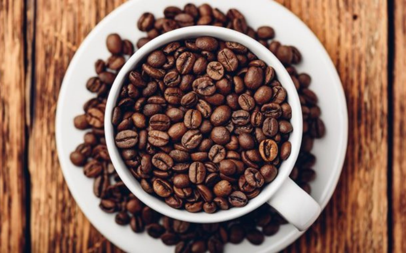
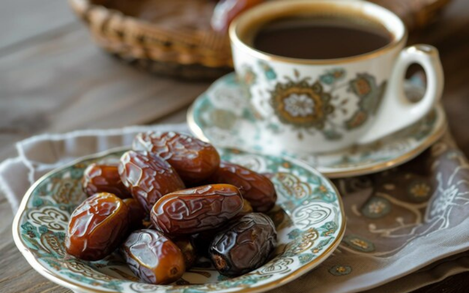
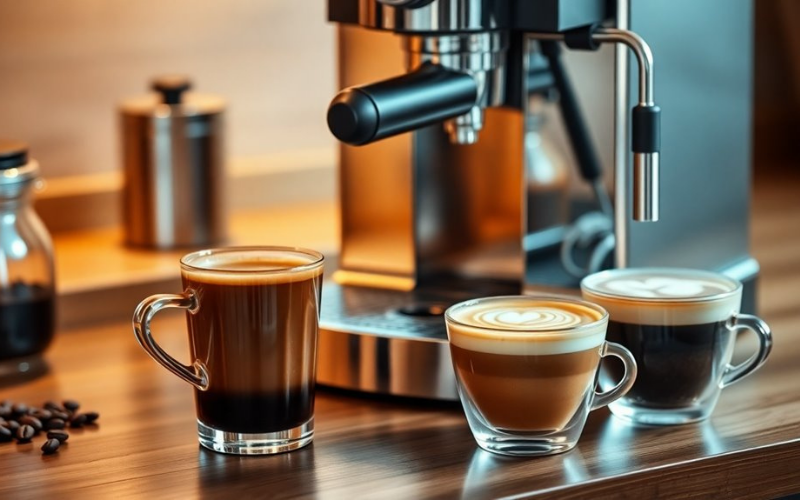
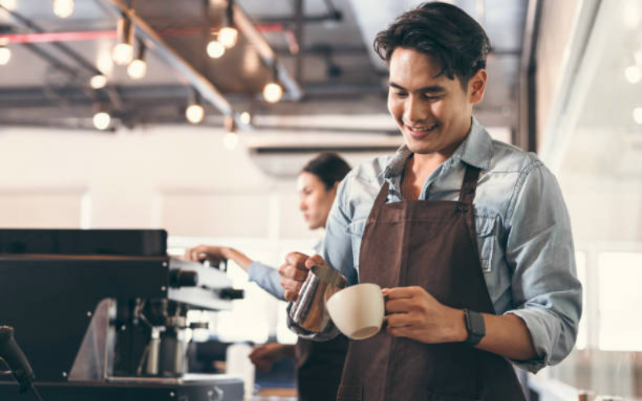

Galeri
Galeri Saudi Coffee
Berikut beberapa dokumentasi produk dan kegiatan Saudi Coffee sebagai UMKM kopi khas Arab dari Pekalongan.




Audio
Audio Cerita Singkat
Dengarkan cerita singkat mengenai Saudi Coffee sebagai UMKM kopi khas Arab.
Cerita singkat tentang Saudi Coffee.
Video
Video Saudi Coffee
Video dapat digunakan sebagai dokumentasi tambahan produk atau proses kegiatan UMKM.